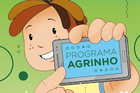
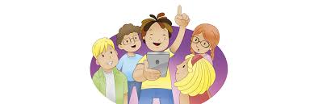

A expressão "festejando a conexão entre o campo-cidade" refere-se a um tema que enfatiza a interdependência e a importância da relação mútua entre o mundo rural e o urbano, promovendo ações, ideias e projetos que visam soluções sustentáveis para o agronegócio e a vida urbana. A relação entre campo e cidade é de dependência mútua, onde o campo fornece alimentos e matérias-primas para a cidade, e a cidade oferece mercado consumidor e tecnologias para o campo. Projetos que promovem a conexão campo-cidade visam soluções que equilibrem a produção agrícola com a preservação do meio ambiente, garantindo a sustentabilidade tanto no campo quanto na cidade. O tema é utilizado em escolas para estimular a reflexão sobre a importância da relação campo-cidade e para incentivar a criação de projetos que promovam essa conexão. A iniciativa é frequentemente celebrada em eventos que reúnem produtores rurais, estudantes, professores e autoridades, promovendo a troca de experiências e o fortalecimento da conexão entre os dois mundos.
.jpeg)
Atualmente, o concurso conta com 15 categorias, desde atividades clássicas como desenho e redação até temas de vanguarda, como robótica e programação. Desta forma, o Agrinho acompanha os avanços que ocorrem na sociedade, transformando essas vivências em práticas didáticas e incentivando o aprendizado das novas gerações.Em 30 anos de atividade, o Agrinho vem impactando a formação das novas gerações do campo e da cidade. A iniciativa leva para as salas de aula do Paraná uma abordagem diferenciada de temas complementares à vivência escolar, como cidadania, saúde, meio ambiente e ética, propiciando o despertar da consciência junto às futuras gerações de cidadãos paranaenses.
O Programa completa 26 anos de trabalhos no Paraná. Concebido em 1995, foi à campo em 1996, levando às escolas da rede pública de ensino uma proposta pedagógica baAnualmente, o programa envolve a participação de aproximadamente 800 mil crianças e mais de 50 mil professores da educação infantil, do ensino fundamental e da educação especial, estando presente em todos os municípios do Estado. 
Criado com o objetivo de levar informações sobre saúde e segurança pessoal e ambiental, principalmente às crianças do meio rural, o Programa se consolida como instrumento eficiente na operacionalização de temáticas de relevância social da contemporaneidade dentro dos currículos escolares. Especialistas altamente qualificados, de renome nacional e internacional, de diversos grupos de pesquisa que trabalham em rede, fundamentam as informações que compõem o material didático preparado com exclusividade para o Programa. Pelo incentivo à pesquisa, defende-se uma educação crítica, criativa, que desenvolva a autonomia e a capacidade de professores e alunos assumirem-se como pesquisadores e produtores de novos conhecimentos. Desde seu início em 1996, os professores e alunos recebem com entusiasmo e dedicação as atividades do Programa Agrinho, a cada ano, esse trabalho vem se superando em qualidade e criatividade.